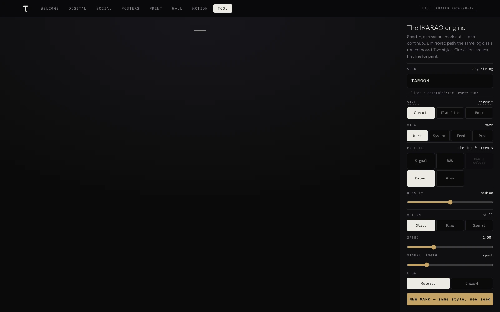
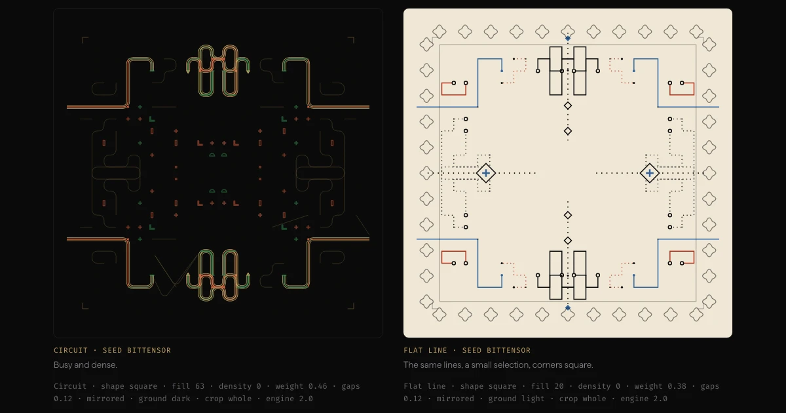
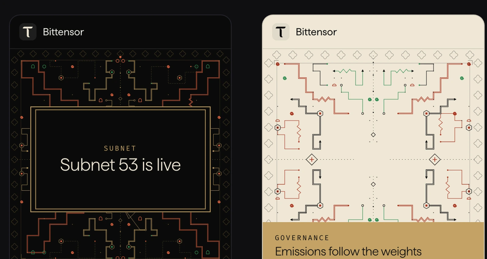

An identity built
to keep growing.
Art direction made into a working system. Each name gets a distinct mark; every mark belongs to the same family.

SN-01

SN-18

SN-64
- Scope
- Art direction · Identity · Generative code
- Project
- Commissioned · Delivered · Dan Andrews · 2026
A growing network needs more than a fixed set of logos.
Named subnets and validators need their own identity without fragmenting the network. I developed the visual language, translated it into drawing rules, and delivered the engine and application templates together.
Build the family resemblance into the drawing rules. The team can introduce another name without commissioning another visual direction.
The system in use
The captured tool and application examples document the delivered system. Try the source engine in the live example below.



One name.
Its own identity.
Type a name. Change the register. The output comes from the delivered drawing engine, running here in your browser. The same input and settings give the same mark.
A name controls the routed structure. The register changes its visual expression. The family comes from the shared rules.
Save this mark ↓Live engine demonstration · Engine 2.0
Drawing grammar researched from Shipibo-Konibo kené. The formal lineage is credited; the engine does not claim the tradition’s cultural meaning. These generated examples demonstrate the system, not network adoption.
The rule is the identity.
A network adds names faster than a designer can make bespoke logos. Here, the name seeds a drawing engine: the same input and settings return the same mark.
Family resemblance comes from the shared geometry. The engine controls let the team extend that family while keeping density, structure and expression within the system.
One name, two expressions.
Flat line and Circuit use the same seed with different visual densities. The comparison holds the name constant so the effect of that choice can be inspected directly.
That gives the identity room to change with its application. Try both registers in the live engine above, then export the result as an SVG.
The handover includes the tool.
The commissioned scope brought the visual language, generator, specimen sheets and social templates together. New names can be generated through the same drawing rules.
The templates show how an output becomes a repeatable application. Concept applications are identified as such; they illustrate the design’s range.
A visual identity that can generate its next application.
Art direction, deterministic drawing code, specimen sheets and social templates, delivered as one commissioned system.
Try the delivered engine
Enter a name, switch registers and save an SVG. The demonstration runs the delivered source engine in your browser.
Generate an identity ↗Project status
Commissioned scope delivered in 2026. The portfolio includes engine demonstrations and labelled concept applications; network adoption has not been established here.
Building an identity that needs to keep extending?
Discuss a project ↗